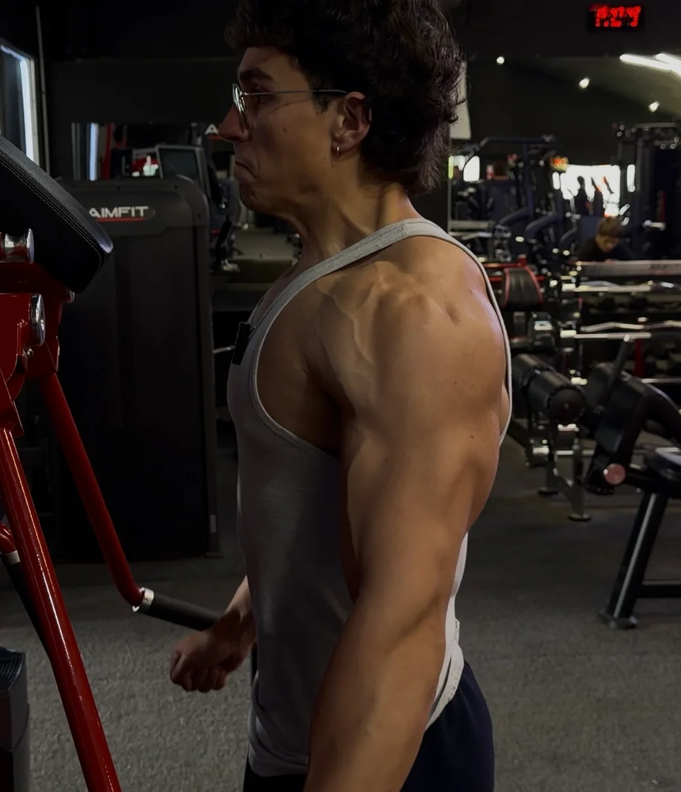
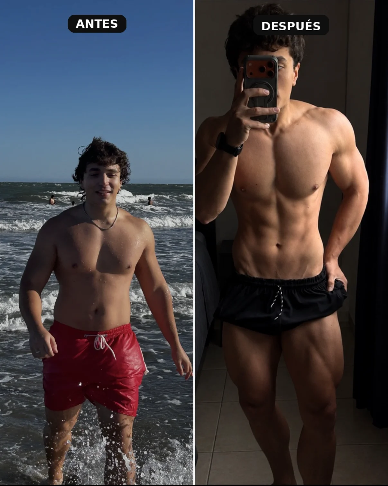
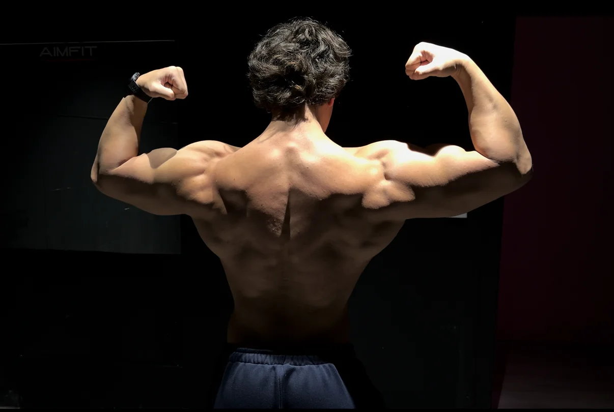

Ciencia aplicada.
A tu entrenamiento.
Selección de ejercicios, volumen e intensidad con un propósito. Un enfoque basado en evidencia, llevado a tu rutina.
COACHING ONLINE · BASADO EN CIENCIA
El físico que querés construir necesita un plan.
Entrená con estructura, entendé tu progreso
y hacé que cada repetición cuente.
01 / EL MÉTODO
Entrenar fuerte es parte del camino. Entrenar con sentido es lo que le da dirección.
Selección de ejercicios, volumen e intensidad con un propósito. Un enfoque basado en evidencia, llevado a tu rutina.
Un plan que tenga en cuenta tu punto de partida, tus objetivos y el tiempo que podés dedicarle.
Aprendé a entrenar con criterio, registrar tus avances y construir hábitos que puedas sostener.

EL TRABAJO SE HACE.02 / TU COACH
Cordobés, de Argentina. Coach y personal trainer.
Llevo varios años capacitando y entrenando a personas. Mi forma de trabajar une la experiencia en el gimnasio con un entrenamiento basado en ciencia.
Quiero ayudarte a construir un buen físico, pero también a entender cómo entrenar. Con una rutina clara, una estructura sólida y compromiso con el proceso.
Hablemos de tu objetivo ↗EL PROCESO TAMBIÉN ES PERSONAL
Mi propia evolución forma parte de lo que soy como coach. Detrás de cada cambio hay tiempo, aprendizaje y trabajo.


“No necesitás hacerlo perfecto.
Necesitás seguir haciéndolo.”
Esta es mi evolución, no una promesa de resultados en tres meses. Cada proceso es diferente.
03 / ASESORÍA ONLINE
Un espacio para dejar de entrenar sin rumbo y empezar a construir tu progreso con una estructura.
Tu experiencia, tus objetivos y tu disponibilidad. El plan empieza por conocerte.
Organizamos el entrenamiento para que sepas qué hacer y para qué lo hacés.
Tres meses de asesoramiento para entrenar con dirección y construir constancia.
3 MESES
CON VOS
Tu objetivo. Tu punto de partida.
Un plan para avanzar.
04 / MÁS ALLÁ DE LA RUTINA
Entrenamiento, ideas y un poco del día a día. Seguime y conocé cómo vivo este proceso.
CAMBIÉ DE PREPARADOR · Road to UFA #1 — Ver en YouTube ↗
SHORTS / ENTRENAMIENTO Y DÍA A DÍA
Elegí un Short para reproducirlo acá. Ver todos en YouTube ↗
05 / DALE PLAY. DALE CON TODO.
Mi playlist para acompañar esas repeticiones que cuestan un poco más. Auriculares, enfoque y a entrenar.
GYM LIFESTYLE en Spotify ↗06 / TU PRÓXIMO CAPÍTULO
Contame dónde estás y a dónde querés llegar. El primer paso no es levantar una pesa: es tomar la decisión.
¿PREFERÍS HABLAR DIRECTAMENTE?Escribime por WhatsApp ↗ANTES DE EMPEZAR
No hace falta partir de un nivel específico. Contame tu experiencia para conversar sobre una propuesta adecuada a tu punto de partida.
El asesoramiento es 100 % online y dura tres meses. Podés consultarme desde donde estés.
Escribime por WhatsApp o completá el formulario para conocer el valor y los detalles de la asesoría.
Cada persona tiene un punto de partida diferente. La asesoría te da estructura y orientación; los resultados dependen de tu contexto, constancia y evolución.